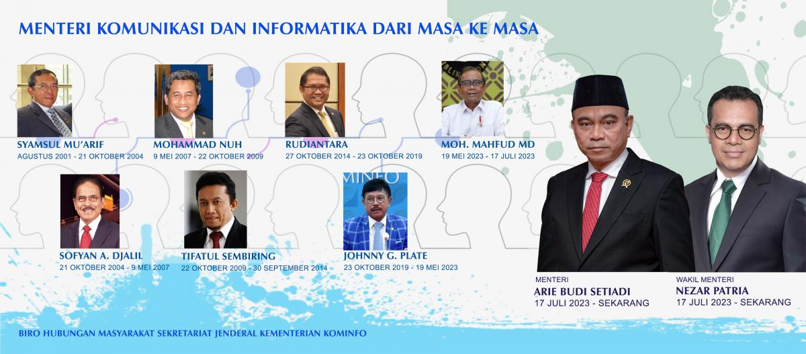

Berikut
adalah
daftar tokoh Indonesia yang pernah menjabat sebagai Menteri Komunikasi dan Informatika mulai tahun 2001
sampai
sekarang:
H.
Syamsul
Mu'arif, B.A. |Kabinet
Gotong
Royong| Masa Kerja: 9 Agustus 2001 s.d. 20 Oktober 2004 (Bernama Menteri Negara Komunikasi dan
Informasi);
Dr.
Sofyan A.
Djalil, SH, MA, MALD
|Kabinet
Indonesia Bersatu| Masa Kerja: 21 Oktober 2004 s.d. 9 Mei 2007;
Prof. Dr. Ir. H. Mohammad Nuh,
DEA |Kabinet Indonesia
Bersatu| Masa Kerja: 9 Mei 2007 s.d. 22 Oktober 2009;
Ir. H. Tifatul Sembiring |Kabinet Indonesia Bersatu II| Masa
Kerja
: 22 Oktober 2009 s.d. 30 September 2014;
Rudiantara |Kabinet Kerja| Masa Kerja: 27
Oktober
2014 s.d. 23 Oktober 2019;
Johnny
Gerard Plate |Kabinet Indonesia Maju|
Masa
Kerja: 23
Oktober 2019 s.d. 17 Mei 2023
Moh.
Mahfud MD (Plt) |Kabinet Indonesia Maju|
Masa Kerja:
17 Mei
2023 s.d. 17 Juli 2023
Sepanjang sisa
masa jabatan
Kabinet
Indonesia Maju, Presiden Joko Widodo selain menunjuk Menteri juga Wakil Menteri:
Menteri: Arie Budi Setiadi | Kabinet Indonesia Maju| Masa
Kerja: 17
Juli 2023 s.d. sekarang
Wakil Menteri: Nezar
Patria | Kabinet Indonesia Maju| Masa
Kerja: 17
Juli 2023 s.d. sekarang